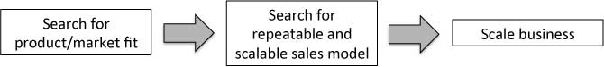

Are We There Yet: Thinking Through Product/Market Fit (LTV, Blog Post #1)
launching-technology-venturesyear-two{kind=link}
"Startups occasionally ask me to help them evaluate whether they have achieved product/market fit. It's easy to answer: if you are asking, you're not there yet." -- Eric Ries, "The Lean Startup" (pg 220)
The Context
Hypothesis-driven entrepreneurship --- epitomized by Eric Ries' Lean Startup methodology --- has become all the rage among aspiring tech founders. It's not hard to see why. Ries' focus on customer discovery and iterative development addresses a dangerous problem in the two established paradigms for building software.
Waterfall product development presumes that the problem and the solution are known, and we just have to build the solution in an efficient, staged manner. Agile product development admits that the solution is unknown, but still presumes that the problem is known --- the "voice of the customer" (usually the product manager) will recognize useful software when she sees it. But actually, Lean Startup tells us, the problem is usually unknown, too: it takes ingenuity, guts, and contact with customers
The Problem
Okay, so we admit that we're in the land of the blind, and we need to be disciplined and systematic about figuring out what problem we should be solving. But how do we know when we've got the right problem paired with the right solution?
Ries tells us that the watershed condition is product/market fit --- we've looped through the Build-Measure-Learn process, improving all the while, until we've built an "engine of growth" (by which Eric appears to mean a product with rapidly accelerating user acquisition). Then, we just add fuel and watch the engine go.
The trouble is that a whole bunch of phenomenally successful and (purportedly) Lean startups slowed down rapid product development iteration --- basically, decided that the product was mostly done --- well before they had anything resembling an engine of growth.
Why It Matters
The lack of rigor around what constitutes product/market fit makes successfully applying Lean methodology much harder. One of our class guests, David Skok, has written brilliant expositions on constructing a repeatable, scalable sales model. He opened our class discussion with a graphic (roughly):

{kind=link}
But wait, my business only has product/market fit if I already have a sustainable user acquisition model --- ideally an engine of growth so powerful that just a small quantity of "fuel" causes users to crash my webservers and beat down the front door to my startup's office in desperate mad dash to consume my product.
But it seems to me that my venture has probably already figured out the marketing and sales part of the equation if that is occurring.
And many (if not most) successful startups do appear to delineate building a product from building a sales model.
Two examples in brief (one cribbed from David Skok):
-- Airbnb enters YCombinator with a product they have already trialled at SXSW and the Democratic National Convention. They expect to do a ton of development in YC. Paul Graham tells the founders to stop building product, hop a plane to New York City (where they have the most adoption), and personally snap prettier photos of the apartments currently listed on Airbnb.
Scalable? No way.
Did the market tell them to do this? Nope (at least I don't think so).
Did it work? Yes. Prospective renters and couch-surfers had been turned off by ugly descriptions of the listed apartments. Success.
-- Constant Contact completes product development (in the words of David Skok, has found product/market fit). But prospective customers aren't buying.
In fact, prospective customers (small businesses in Atlanta) aren't sure why they would need mass-mailing software in the first place. Constant Contact distributes wire-bound books for small businesses to use as visitor books to record shoppers' e-mail addresses.
A month later, Constant Contact's prospective customers have hundreds of e-mail addresses, and now they need mass-mailing software. Success.
We can tell similar stories for startups like JBoss, RentJuice, and Dropbox.
To be clear, I don't think David is wrong in making a distinction in the startup lifecycle between product development and marketing/sales. I think Lean Startup makes it difficult to tell when to stop focusing primarily on building product and start focusing primarily on selling product.
Conclusions
One possibility (maybe what Eric would argue) is that I've defined the "product" part of "product/market fit" too narrowly. The product is not just a piece of software but rather the startup as a whole --- a product-marketing-sales-PR conglomeration that must be tuned and operating in harmony.
I'm not so sure. There is a natural tension between Lean-style product development and marketing/sales.
In Lean product development, we tirelessly labor to determine what the customer will use and then build something viable and desirable. If the customer tells us (by his or her behavior) that a feature should be different, we change. We pull the product out of the market.
In sales and marketing, we tirelessly labor to convince the customer that they should use or buy what we already have. If the customer tells us that a feature should be different, we generally try to convince him or her that we know better. We push the product onto the market. And ideally, the customer doesn't require much convincing.
Lean Startup methodology needs a better definition of product/market fit than "I know it when I see it." Maybe arbitrary standards like 40% net promoter score make the most sense. Perhaps we just admit that user acquisition growth is not the right metric for many startups, especially those that require higher-touch sales models. Regardless, I think we need to take a deeper look at what goal we're actually chasing if we're running lean.